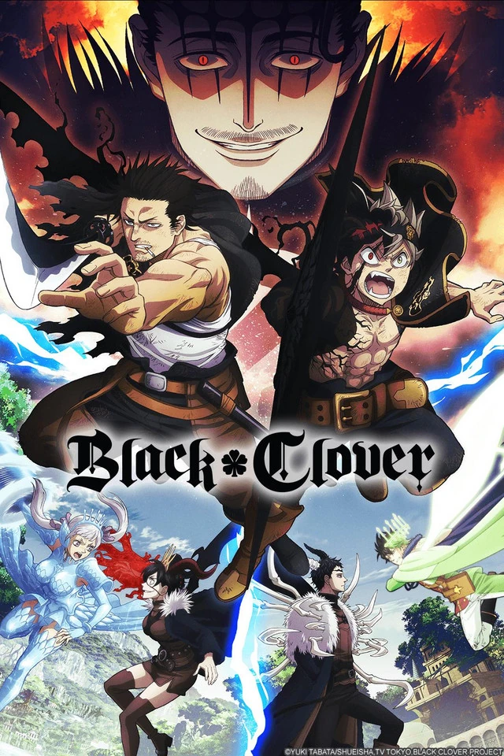

Asta
protagonista da obra,um plebel que no começo passou por muitas dificuldades mais sem pestenejar continou o seu caminho em busca de séu sonho.
Go to videoYuno
Irmão adotivo do Asta ambos cresceram em uma igreja em uma vila afastada da capital, ambos são orfãos, depois de um tempo Yuno descobre que o principe de um reino vizinho, mais não aparenta querer voltar para seu reino, pois assim como Asta,Yuno também deseja se tornar o rei mago
Go to videoCapa

Yami
Capitão dos Touros negros (grupo que o Asta afaz parte) Yami e um portador de uma das magias mais raras no mundo de Black Clover, a magia da escuridão, ele também é um estrageiro de um Pais desconhecido pelo povo de Clove, que fez com que pegassem em seu pé durante boa parte do tempo.
Go to videoTrindade Negra
Atualmente a Trindade Negra são os principais vilões da obra, seus objetivos principal e de abrir os portões que librtam os demonios de seu mundo e façam uma dominação global.
Go to videoEntre em contato